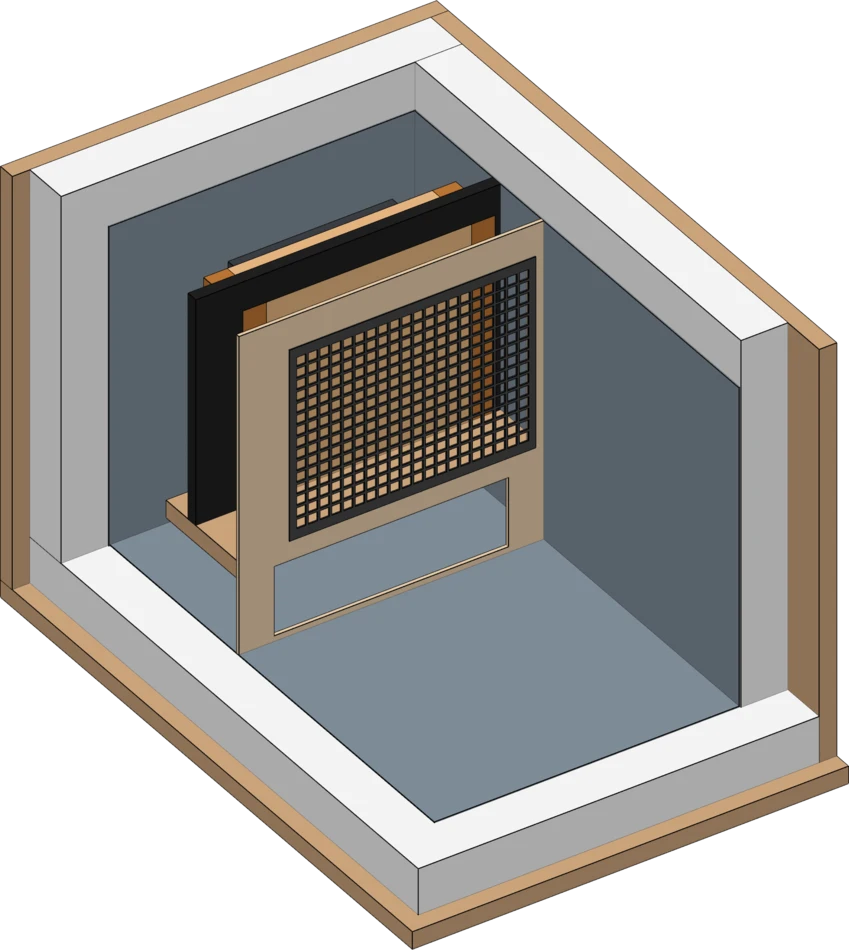
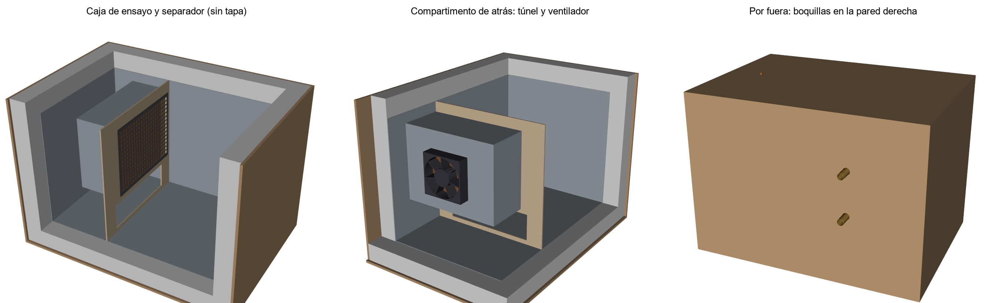
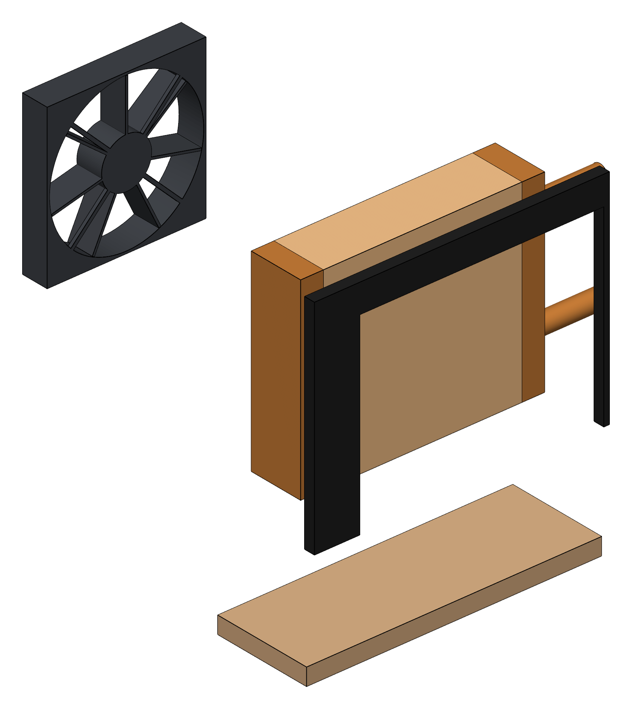
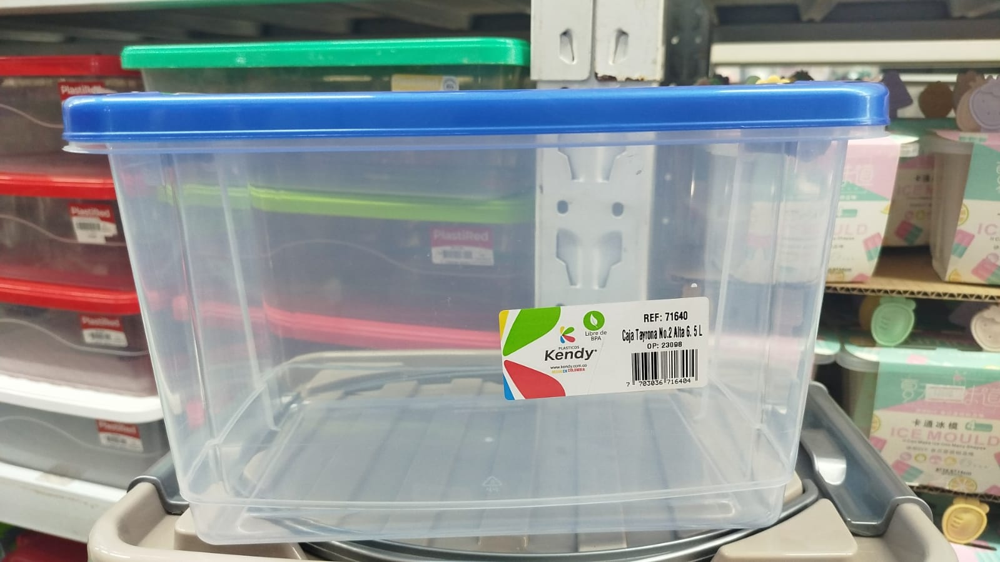
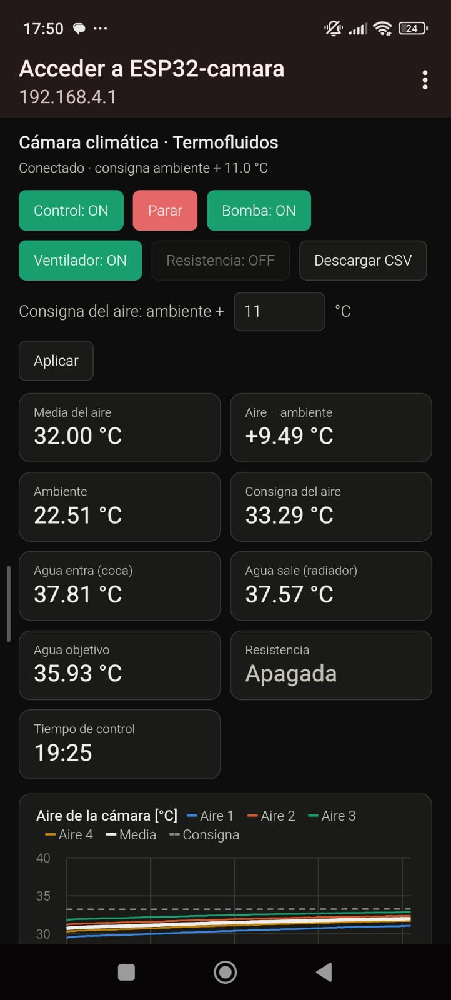
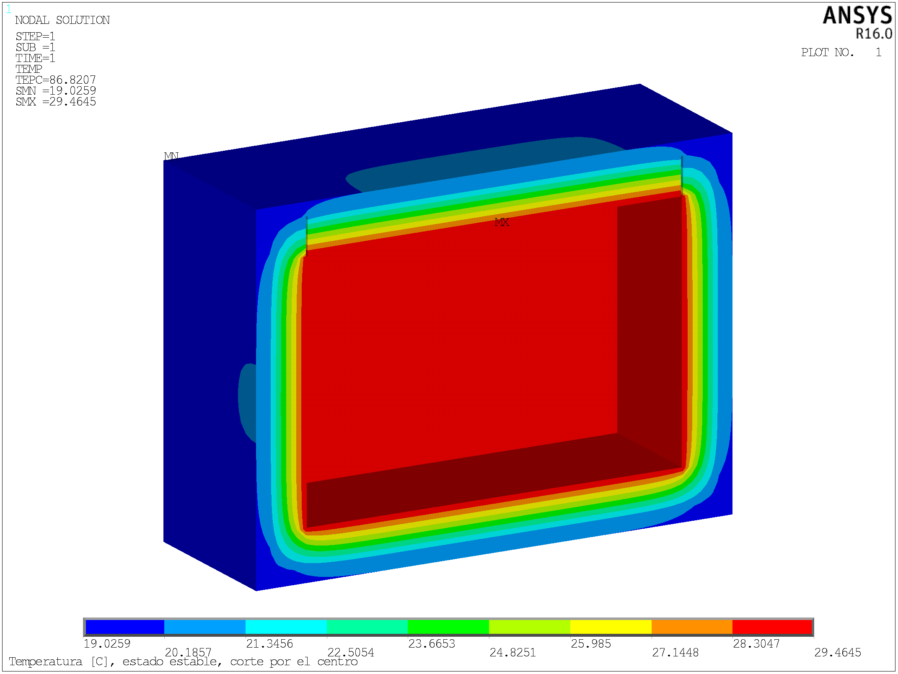
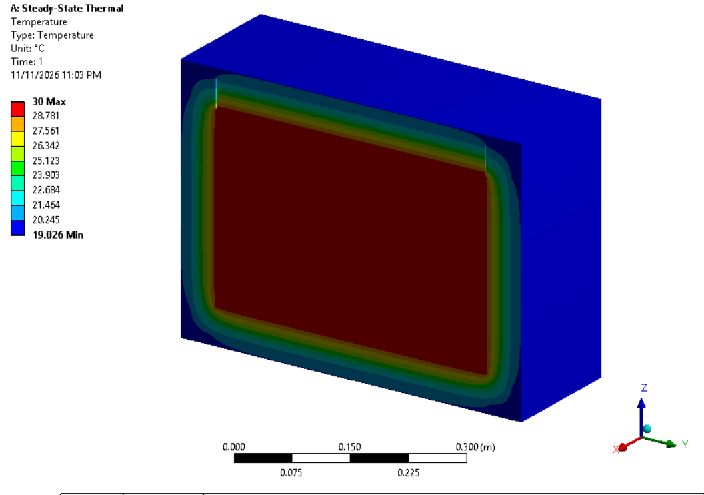
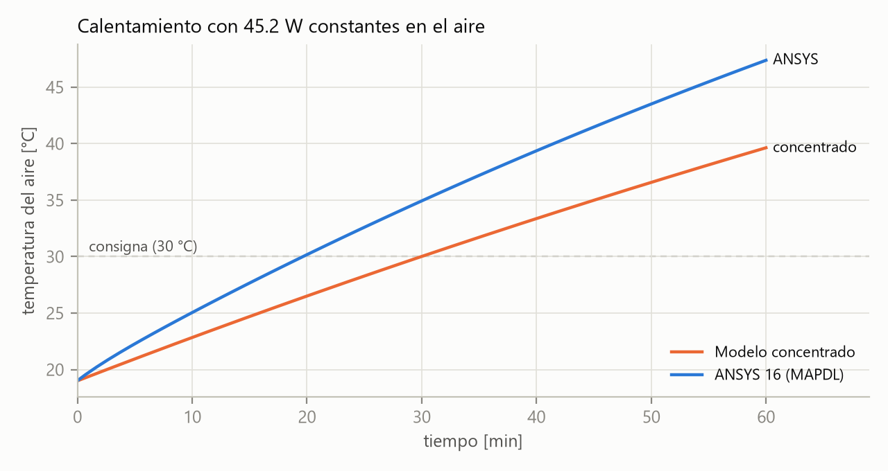
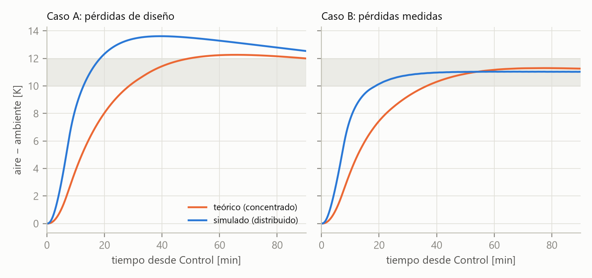

Proyecto de ingeniería
Cámara
climática.
Diseño y validación de una cámara instrumentada de 1000 in³ con calentamiento indirecto agua–aire.

- Volumen libre
- 1156 in³ Mínimo de 1000 in³
- Tiempo hasta +10 K
- 17.8 min Límite de 60 min
- Tiempo en banda de ±1 K
- 22.1 min Mínimo de 20 min
Vista general
Del modelo al laboratorio
Una cámara de calentamiento indirecto que transfiere calor del agua al aire a través de un radiador de cobre de dos pasadas. La zona de ensayo queda libre de componentes.




- Dimensiones útiles
- 265 × 260 × 275 mm
- Pérdidas térmicas
- UA = 0.519 W/K
- Intercambio agua–aire
- K = 4.54 W/K
Diseño térmico
La cámara y su aislamiento
El recinto separa el volumen de ensayo del compartimento técnico. El análisis usa las condiciones de Cajicá, a 74.14 kPa.
Geometría, Capas de la Pared y Hermeticidad (D1, M1, M2)
- Criterio geométrico: Aunque la esfera reduce el área 19.4 %, se eligió un prisma rectangular casi cúbico para fabricar juntas planas sin fugas con lámina y tablero comercial.
- Volumen dividido en dos zonas:
- Caja de ensayo útil: 265 × 260 × 275 mm = 0.018948 m³ (1156 in³), superando el mínimo obligatorio de 1000 in³.
- Compartimento del radiador: 150 × 260 × 275 mm (separado por reja metálica perforada en L que protege al usuario y deja circular el aire).
- Pared compuesta (adentro → afuera): Lámina de aluminio de 0.95 mm (distribuye el calor y protege el EPS) + Poliestireno expandido (EPS) de 40 mm (k = 0.038 W/m·K) + Cascarón estructural de MDF de 15 mm (k = 0.13 W/m·K).
- Efecto altitud de Cajicá (2558 m, 74.14 kPa): La densidad del aire seco a 30 °C baja a 0.852 kg/m³ (27 % menor que a nivel del mar) y el agua hierve a 91.5 °C.
Balances de Masa y Energía, UA y Masa Térmica (D1)
ṁw,ent = ṁw,sal = ρw·V̇w = 0.0288 kg/s (a 1.76 L/min)
maire = ρaire·Vint = 0.852 × 0.0297 = 0.0253 kg (ṁaire = 5.44×10⁻³ kg/s)
Rtotal = Ri (0.114) + Ral (0.00001) + Reps (1.569) + Rmdf (0.138) + Ro (0.141) = 1.928 K/W
UA = 1 / Rtotal = 0.519 W/K (el EPS aporta el 81.4 % del aislamiento)
Cef = ∑(m·c·f) = 6911 J/K (Aluminio 19.5 %, Radiador+agua 33.0 %, MDF 28.1 %, Aire 0.4 %)
Cef·(dT/dt) = Q̇hx − UA·(T − T∞) · τ = Cef/UA = 222 min
Para +11 K en 20 min: Q̇req = 66.2 W · Mantenimiento: Q̇mant = 5.70 W



Intercambiador
Del agua caliente al aire
Una bomba recircula el agua entre el tanque y el radiador. El método ε–NTU estima cuánto calor llega al aire de la cámara.
Radiador de Cobre (D2)
Núcleo automotriz de calefacción (Toyota) de 215 × 170 × 50 mm:
- 29 tubos planos de latón/cobre en 2 pasadas (15 ida + 14 retorno).
- Área de aletas: Aaleta = 1.421 m² (persianas louvered, paso 1.5 mm, ηf = 0.938, ηo = 0.946).
- Área exterior de tubos: Atubo = 0.214 m² (Área total lado aire = 1.635 m²).
- Lado agua: Nuw = 8.235 (flujo laminar en ducto plano), hw = 1621 W/(m²·K).
Punto de Operación ε–NTU (D2, M3)
Con el ventilador axial de 92 × 92 × 25 mm instalado (12 V, 0.14 A) a la densidad de Cajicá:
Caire = Cmin = 5.23 W/K
Cagua = Cmax = 109.7 W/K (a 1.6 L/min)
UAhx = 11.4 W/K → NTU = 2.18
ε = 0.870 → K = ε·Cmin = 4.54 W/K
En las pruebas reales se identificó Kexp ≈ 4.65 W/K (diferencia < 2.5 %).
Tanque, Resistencia y Bomba (M4)
- Tanque: Recipiente de polipropileno Plásticos Kendy (6.5 L, Tmáx = 121 °C) con 4.4 L de agua (Ct = 18.3 kJ/K).
- Por qué con tapa: Sin tapa la evaporación pierde 59.7 a 168.7 W; con tapa se evita humidificar el laboratorio y se protege la electrónica.
- Resistencia: Tubular sumergida en U de 1000 W nominales a 120 V (833 W medidos: 118.4 V × 7.04 A).
- Bomba: Diafragma R385 (12 V DC, 0.30 A) con mangueras de PVC de 8 mm; caudal medido por aforo: 1.76 L/min (ΔPcircuito = 4.71 kPa).



Control
Medición y control en cascada
Siete sondas DS18B20 siguen la temperatura del aire, del agua y del ambiente. El controlador PI ajusta la consigna del agua para limitar el sobreimpulso.
Por qué Control en Cascada PI + On/Off (C1, C2)
El tanque con 4.4 L de agua y el radiador con el ventilador de 92 mm tienen constantes de tiempo del mismo orden (~14 min). Si se conmutara la resistencia de 833 W mirando solo el aire, el calor acumulado en el agua seguiría subiendo la cámara varios grados después de apagar.
ea = Tset,a − Taire (con Tset,a = Tamb + 11.0 K)
T*w = Tamb + 2.0·(Tset,a − Tamb) + 0.6·ea + 0.0025·∫ea dt
Saturación: Tset,w ∈ [Tset,a, min(Tamb + 30 K, 58 °C)]
• Si Tent < Tset,w − 0.2 K → Resistencia ON
• Si Tent > Tset,w + 0.2 K → Resistencia OFF
• Si ea < −0.3 K → Apagado directo y congelación del integrador (anti-windup)
Sensores 1-Wire, Acondicionamiento y Potencia (E1–E4)
- 7 sondas digitales DS18B20 (E1): Bus único 1-Wire en
GPIO 4con pull-up de 5 kΩ a 3.3 V (resolución 12 bits = 0.0625 °C, tiempo de conversión asíncrono 750 ms). 4 en el aire interior, 1 en ambiente, 1 en agua de entrada (tanque) y 1 en agua de salida. - Filtro de 3 etapas + Calibración (E2):
- Verificación CRC de 8 bits y descarte de −127 °C y 85 °C.
- Rechazo de picos (> 3 K en aire o > 8 K en agua en 1 s).
- Filtro de Kalman escalar (Q = 0.002 K², R = 0.03 K²) + corrección de desfases en frío.
- Conmutación y Potencia (E3, E4): ESP32-S3-N16R8 gobierna módulo optoacoplado de relés SRD-05VDC-SL-C (lógica invertida:
GPIO 5Bomba,GPIO 6Resistencia,GPIO 7Ventilador). Línea AC de 120 V aislada de la fuente DC BAKU de 12 V (consumo total DC: 5.3 W).
Diagrama de Bloques del Control en Cascada Implementado en el Firmware



Simulación
De las ecuaciones a ANSYS
Seis modelos en Python y ANSYS permiten comparar las pérdidas, el calentamiento de las paredes y el comportamiento del sistema acoplado.










Por qué coinciden tan bien ambos modelos
En el modelo teórico concentrado (3 EDO) el acoplamiento agua–aire se calcula con la fórmula analítica K = ε·Cmin = 4.54 W/K, mientras que el modelo simulado distribuido divide los tubos del radiador en 20 celdas axiales y el EPS en 12 capas con masa térmica.
Como el caudal de agua es alto (Cmin/Cmax = 0.044), la caída de temperatura del agua en el radiador es menor a 0.3 K y la fórmula analítica ε–NTU reproduce exactamente la integración celda por celda.
Validación
La prueba final
En el ensayo del 22 de noviembre de 2026, la cámara alcanzó el salto térmico de +10 K en 17.8 min y permaneció 22.1 min en la banda de tolerancia. En la primera prueba, con arranque en frío, alcanzar +10 K tomó 24.6 min.
Temperatura sobre el ambiente
Comparación del ensayo y los modelos
- Experimental
- +10.00 K
- Simulado
- +9.97 K
- Teórico
- +10.12 K
18 puntos de la presentación original. La franja marca la banda de +10 a +12 K.

| Magnitud Evaluada | Teórico (concentrado) | Simulado (distribuido) | Experimental (Prueba 2) | Error Sim. vs. Exp. |
|---|---|---|---|---|
| Tiempo hasta ΔT = +10 K [min] | 17.3 | 17.9 | 17.8 (requisito ≤ 60) | 0.6 % |
| Tiempo continuo en banda ±1 K [min] | 22.7 | 22.1 | 22.1 (requisito ≥ 20) | 0.2 % |
| Desviación máx. respecto a consigna [K] | 0.78 | 0.81 | 0.76 (requisito ≤ 1.0) | 6.6 % |
| ΔT aire–ambiente final [K] | 11.00 | 10.97 | 10.88 (Taire = 35.16 °C) | 0.8 % |
| Temperatura media en sostenimiento [°C] | 34.88 | 34.91 | 34.98 ± 0.62 K | 0.2 % |
| Energía eléctrica consumida [Wh] | 133.5 | 124.2 | 122.1 (8.8 min ON) | 1.7 % |
Guion
Equipo y guion de sustentación
Consulta la matriz de responsabilidades y selecciona a un integrante para leer su intervención.
| Integrante | Diseño (D) | Mecánica (M) | Electrónica (E) | Control (C) |
|---|---|---|---|---|
| 1. Valentina Cárdenas | D1. Cámara: balance de masa y energía, aislamiento, pérdidas (UA = 0.519 W/K), masa térmica (6911 J/K) y potencia. | M3. Compartimento del radiador: repisa, reja perforada en L y montaje del radiador y ventilador de 92 mm. | E4. Potencia y seguridad: fuente DC de 12 V (5.3 W), línea AC de 120 V de la resistencia (833 W) y consumos. | C4. Pruebas: protocolo, ejecución y análisis de registros (cumplimiento +10 K en 17.8 min y balance de energía). |
| 2. Santiago Vega | D4. Planos y materiales: 18 piezas, ensamble y 20 planos en SolidWorks 2025, lista de materiales (BOM). | M4. Circuito hidráulico: tanque de 4.4 L con resistencia, bomba R385, mangueras y aforo de caudal (1.76 L/min). | E3. ESP32-S3 y relés: asignación de pines, módulo SRD-05VDC-SL-C y conmutación de bomba, resistencia y ventilador. | C1. Estrategia y sintonía: cascada PI + on/off (±0.2 K), consigna Tamb + 11 K y ganancias simuladas. |
| 3. Mariana Gil | D3. Simulación: 6 modelos en Python y ANSYS 16 (sensibilidad de malla y transitorio) y comparación. | M2. Aislamiento y sellado: EPS de 40 mm, forro de aluminio de 0.95 mm, juntas y control de fugas por la tapa. | E2. Acondicionamiento y calibración: verificación CRC, rechazo de picos, filtro de Kalman y desfases en frío. | C2. Firmware: lazo de control cada 1 s, protecciones de sobretemperatura, alarmas, energía y eficiencia. |
| 4. Andrés Fonseca | D2. Intercambiador: selección del radiador y ventilador, método ε–NTU (ε = 0.870), K = 4.54 W/K y caudal. | M1. Caja: corte y armado del MDF de 15 mm, caja útil de 265 × 260 × 275 mm (1156 in³) y tapa superior. | E1. Sensores: las 7 sondas DS18B20 en el bus 1-Wire (GPIO 4), direcciones ROM y ubicación espacial. | C3. Interfaces: programa de escritorio PyQt5 con gráficas y CSV, y página web móvil por Wi-Fi (192.168.4.1). |
Guion por integrante
Cada intervención dura de 3 a 4 minutos y cubre los módulos asignados de diseño, mecánica, electrónica y control.
Apertura y D1 — Diseño Térmico de la Cámara (Balance, Aislamiento, Masa Térmica y Potencia) Mostrar Sección 1 y Sección 2
«Buenos días, profesor y compañeros. Nuestro proyecto es el diseño, construcción, instrumentación y validación de una cámara climática de calentamiento indirecto agua–aire. Yo les voy a presentar el análisis termodinámico de la cámara (D1), el montaje del compartimento del radiador (M3), la etapa de potencia y seguridad eléctrica (E4) y el análisis de las pruebas finales de validación (C4).
Empezando por el diseño térmico de la cámara (D1): trabajamos con todas las propiedades del aire evaluadas a la presión barométrica de Cajicá, 74.14 kPa (a 2558 m), donde la densidad del aire es 0.852 kg/m³ —un 27 % menor que a nivel del mar— y el agua hierve a 91.5 °C. Para garantizar que la temperatura nunca baje de +10 K sobre el ambiente dentro de la banda de ±1 K, fijamos la consigna de diseño en Tamb + 11 K.
Modelamos la transferencia de calor tridimensional a través de la pared compuesta —lámina interior de aluminio de 0.95 mm, poliestireno expandido (EPS) de 40 mm y cascarón exterior de MDF de 15 mm— sumando los factores de forma de las 6 caras planas, las 12 aristas y las 8 esquinas. Esto nos dio una resistencia térmica total de 1.928 K/W, equivalente a una conductancia global UA = 0.519 W/K, donde el EPS aporta el 81.4 % del aislamiento total. Con esto, las pérdidas estacionarias a +11 K son de apenas 5.70 W. Además, cuantificamos la masa térmica efectiva de todos los componentes internos ponderada por su fracción de calentamiento f, obteniendo Cef = 6911 J/K (donde el aire es solo el 0.4 % y dominan el conjunto radiador–agua con 33 % y el forro de aluminio con 19.5 %). Del balance de energía transitorio obtuvimos una potencia requerida en el aire de 66.2 W para llegar en 20 minutos y 5.70 W para sostenimiento.»
M3 y E4 — Compartimento del Radiador y Etapa de Potencia y Seguridad Mostrar Figuras del Interior y Relés (Secciones 2 y 4)
«En la parte mecánica (M3), construimos un compartimento técnico posterior de 150 mm de fondo separado de la zona de ensayo por una reja metálica perforada en L. Allí montamos el radiador de cobre sobre una repisa de MDF de 15 mm con abertura inferior de retorno y acoplamos el ventilador axial de 92 mm directamente contra la cara del núcleo para forzar el paso del aire entre las aletas y evitar cortocircuitos de flujo.
En cuanto a potencia y seguridad (E4), separamos completamente el circuito de corriente alterna de 120 V del circuito de corriente continua. Medimos con multímetro la resistencia tubular sumergida operando a 118.4 V AC y 7.04 A, lo que entrega una potencia eléctrica real de 833 W. Para la bomba y el ventilador utilizamos una fuente DC regulada a 12.0 V, con consumos medidos de 0.30 A (3.6 W) en la bomba y 0.14 A (1.7 W) en el ventilador, sumando solo 5.3 W DC.»
C4 — Protocolo, Ejecución y Análisis de las Pruebas Experimentales Finales Mostrar Sección 6 (Gráfica y Tabla de Cumplimiento)
«Finalmente, en la validación experimental (C4) ejecutamos el protocolo completo el 22 de noviembre con muestreo cada segundo. En la Prueba 1, arrancando desde frío, la cámara alcanzó +10 K en 24.6 min. En la Prueba 2, registrada durante 39.9 min (2394 muestras), el aire alcanzó +10 K en 17.8 min (muy por debajo del límite de 60 min) y se mantuvo estable durante 22.1 min (superando los 20 min exigidos) a una temperatura media de 34.98 °C ± 0.62 K, con una desviación máxima respecto a la consigna de 0.76 K (≤ 1.0 K). Del balance de energía experimental, la resistencia estuvo encendida 8.8 min consumiendo 122.1 Wh, de los cuales 20.3 Wh (16.6 %) se transfirieron del radiador al aire, 59 % calentó el agua del tanque y 24 % se disipó por las paredes del tanque sin aislar. Le doy la palabra a Andrés.»
M1 y D2 — Construcción de la Caja de MDF y Selección del Intercambiador (ε–NTU) Mostrar Sección 2 y Sección 3
«Gracias, Valentina. Yo estuve a cargo del corte y armado de la caja estructural (M1), del diseño térmico del intercambiador agua–aire y su ventilador (D2), de la red de sensores digitales (E1) y de las interfaces gráficas de escritorio y web móvil (C3).
En la construcción de la caja (M1), fabricamos el cascarón exterior en MDF de 15 mm con dimensiones internas totales de 415 × 260 × 275 mm. Descontando los 150 mm del compartimento del radiador, la caja de ensayo útil libre quedó de 265 × 260 × 275 mm, lo que equivale a 0.018948 m³ o 1156 in³, cumpliendo con holgura el volumen obligatorio de 1000 in³ y dejando una tapa superior desmontable para introducir las muestras.
Para el intercambiador de calor (D2), seleccionamos un radiador automotriz de cobre y latón de dos pasadas (215 × 170 × 50 mm) con 29 tubos planos y aletas con persianas que aportan un área total del lado del aire de 1.635 m² (1.421 m² en aletas con eficiencia ηf = 93.8 % y 0.214 m² en tubos). Cruzando la curva hidráulica del radiador con la curva del ventilador axial de 92 mm corregida a la densidad de Cajicá, determinamos el punto de operación real en 23.0 m³/h (ΔP = 10.6 Pa). Aplicando el método ε–NTU para flujo cruzado con Cmin = Caire = 5.23 W/K y Cmax = Cagua = 109.7 W/K, obtuvimos UA = 11.4 W/K, NTU = 2.18, una efectividad ε = 0.870 y una constante global de acoplamiento agua–aire K = ε·Cmin = 4.54 W/K, que coincide con los 4.65 W/K medidos en laboratorio.»
E1 y C3 — Red de 7 Sensores DS18B20 e Interfaces PyQt5 y Web Wi-Fi Mostrar Sección 4 (Sensores, GUI de Escritorio y Web Móvil)
«Para la instrumentación (E1) instalamos 7 sondas digitales sumergibles DS18B20 con vaina de acero inoxidable sobre un único bus 1-Wire en el pin GPIO 4 con resistencia pull-up de 5 kΩ: identificamos la dirección ROM de 64 bits de cada sonda para ubicar 4 sensores distribuidos a distintas alturas dentro del volumen de aire de la cámara (Aire 1 a Aire 4), 1 sensor de temperatura ambiente exterior, 1 sensor en la entrada de agua caliente y 1 sensor en el retorno de agua del radiador.
Finalmente, desarrollamos dos interfaces de usuario en tiempo real (C3) que incluyen los 10 elementos exigidos más los criterios de bonificación: una aplicación de escritorio en Python (PyQt5 y pyqtgraph) conectada por USB y una página web servida por Wi-Fi desde la ESP32-S3 en la dirección 192.168.4.1. Ambas muestran en vivo las 7 temperaturas, la evolución temporal de la cámara, el estado encendido/apagado de bomba, resistencia y ventilador, el tiempo de operación, una franja de alarmas visuales y sonoras, el consumo energético acumulado en Wh, la eficiencia térmica instantánea y global, y permiten descargar el registro CSV completo. Los dejo con Santiago.»
D4 y M4 — Planos CAD en SolidWorks 2025 y Circuito Hidráulico Mostrar Sección 1 (CAD) y Sección 3 (Circuito Hidráulico)
«Gracias, Andrés. Yo les voy a explicar el modelado CAD, planos y lista de materiales (D4), la construcción y caracterización del circuito hidráulico (M4), la integración del microcontrolador ESP32-S3 con el módulo de relés (E3) y el diseño y sintonía de la estrategia de control en cascada (C1).
En planos y materiales (D4), modelamos en SolidWorks 2025 las 18 piezas individuales del prototipo y el ensamble general, generando un juego completo de 20 planos técnicos A3 bajo norma ISO con vistas ortogonales, cortes, cotas de fabricación y lista de materiales (BOM), verificando que todos los materiales trabajen con un margen mayor a 30 K respecto a sus límites de servicio (como el EPS cuya temperatura máxima continua es 75–80 °C mientras el agua no pasa de 45 °C).
En el circuito hidráulico (M4), utilizamos un tanque de polipropileno apto hasta 121 °C cargado con 4.4 L de agua (capacidad térmica de 18.3 kJ/K) con tapa superior para evitar pérdidas por evaporación (que en un recipiente abierto alcanzarían entre 60 y 169 W), pero sin cierre hermético para evitar sobrepresión por dilatación. Impulsamos el agua con una bomba de diafragma R385 de 12 V a través de mangueras de PVC de 8 mm de diámetro interno (1.4 m totales, pérdida de carga de 4.71 kPa) y medimos por aforo volumétrico un caudal real en circuito cerrado de 1.76 L/min, con el cual todo el tanque recircula cada 2.5 minutos.»
E3 y C1 — ESP32-S3, Conmutación por Relés y Estrategia de Control en Cascada Mostrar Sección 4 (Diagrama de Bloques en Cascada)
«En la electrónica de actuación (E3), conectamos la placa ESP32-S3-N16R8 a un módulo de relés optoacoplados Songle SRD-05VDC-SL-C (10 A a 250 V AC) de lógica invertida, asignando el pin GPIO 5 a la bomba, el GPIO 6 a la resistencia de 833 W y el GPIO 7 al ventilador.
En cuanto a la estrategia de control y sintonía (C1): como el tanque de 4.4 L y el conjunto radiador–cámara tienen constantes de tiempo similares (~14 min), un control directo sobre el aire causaría un sobreimpulso de varios grados por la energía acumulada en el agua. Por eso diseñamos un control en cascada: el lazo externo PI lee el error del aire ea = Tset,a − Taire y calcula cada segundo la temperatura objetivo del agua combinando prealimentación (kff = 2.0), acción proporcional (R = 0.6, que anticipa el apagado a medida que el aire se acerca a la consigna) y acción integral condicional (ki = 0.0025 s⁻¹, activa solo cuando |ea| < 2 K para evitar windup). Luego, el lazo interno on/off con histéresis de ±0.2 K conmuta la resistencia comparando el agua con esa consigna. Le cedo la palabra a Mariana para cerrar.»
M2 y E2 — Aislamiento, Sellado y Acondicionamiento Digital con Filtro de Kalman Mostrar Sección 2 y Sección 4
«Gracias, Santiago. Yo les voy a presentar el montaje del aislamiento térmico y sellado de la cámara (M2), el acondicionamiento digital y calibración de los sensores (E2), la arquitectura del firmware y sus protecciones (C2) y la simulación computacional en Python y ANSYS junto con la comparación frente al experimento (D3).
En el aislamiento y sellado (M2), revestimos las seis caras interiores con placas de poliestireno expandido (EPS) de 40 mm ajustadas a presión y un forro interno continuo de lámina de aluminio de 0.95 mm que uniformiza la temperatura superficial y aísla el EPS de la humedad. En la tapa superior implementamos un tapón escalonado de EPS que entra 40 mm en la boca de la cámara con doble sello perimetral y sellamos con silicona los pasamuros de las mangueras y cables.
En el acondicionamiento de señal y calibración (E2), dado que los relés electromecánicos conmutan 7 A AC cerca del bus 1-Wire, programamos tres filtros en cascada: primero, verificación del byte CRC de 8 bits descartando códigos de fallo (−127 °C y 85 °C); segundo, un filtro de rechazo de picos que bloquea saltos físicamente imposibles (> 3 K/s en aire o > 8 K/s en agua); y tercero, un filtro de Kalman escalar (Q = 0.002 K², R = 0.03 K²) que elimina el escalonamiento de cuantización sin introducir retardo apreciable, además de restar los desfases iniciales medidos en frío entre las sondas.»
C2 y D3 — Firmware en Tiempo Real y Simulación Computacional (Python vs. ANSYS vs. Experimento) Mostrar Sección 5 y Sección 6
«En el firmware de la ESP32-S3 (C2), estructuramos un lazo no bloqueante exactamente cada 1000 ms que solicita la conversión asíncrona de los 7 sensores, ejecuta el control en cascada, integra la energía eléctrica consumida (Wh) y el calor cedido al aire para calcular la eficiencia térmica, y evalúa 5 alarmas y protecciones automáticas: corte de resistencia por sobretemperatura del agua (> 60 °C), apagado de seguridad si falla la sonda del tanque, alerta de desvío en régimen (> 1 K), alerta de inhomogeneidad entre las 4 sondas de aire (> 2 K) y alerta de sensor desconectado.
Finalmente, en simulación computacional (D3) desarrollamos 6 modelos en Python y ANSYS 16 (elementos SOLID90, SOLID70 y FLUID116). Verificamos la independencia de malla desde 1 400 hasta 225 466 nodos (variación < 0.03 %). En estado estacionario, ANSYS predice pérdidas de 5.47 W (a solo 4 % del cálculo analítico de 5.70 W), y en el sistema acoplado tanque–radiador–cámara Python y ANSYS coinciden dentro de 0.01 K. Al comparar el modelo distribuido frente a la Prueba 2 final del prototipo, el error relativo es de apenas 0.6 % en el tiempo de calentamiento (17.9 min simulado vs. 17.8 min experimental), 0.2 % en el tiempo en banda y 0.8 % en el salto térmico final, validando tanto el diseño térmico como el control implementado. Muchas gracias, quedamos atentos a sus preguntas.»